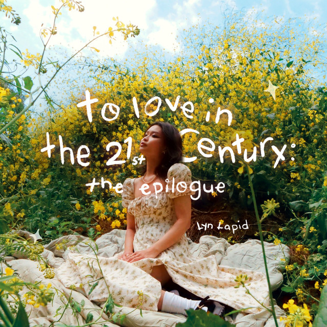
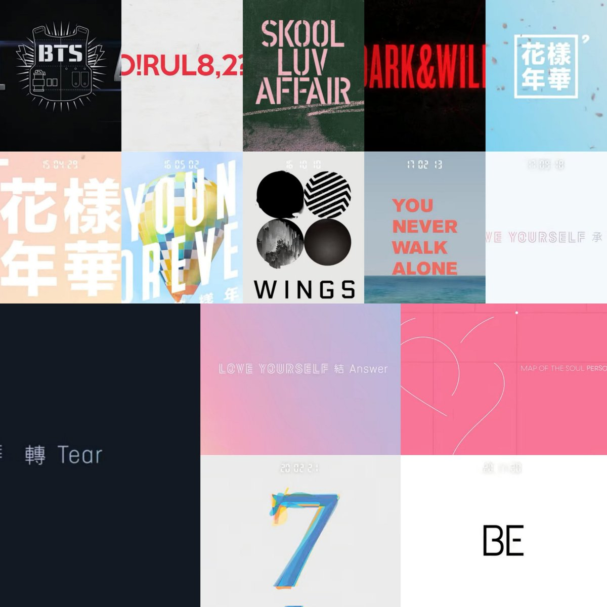
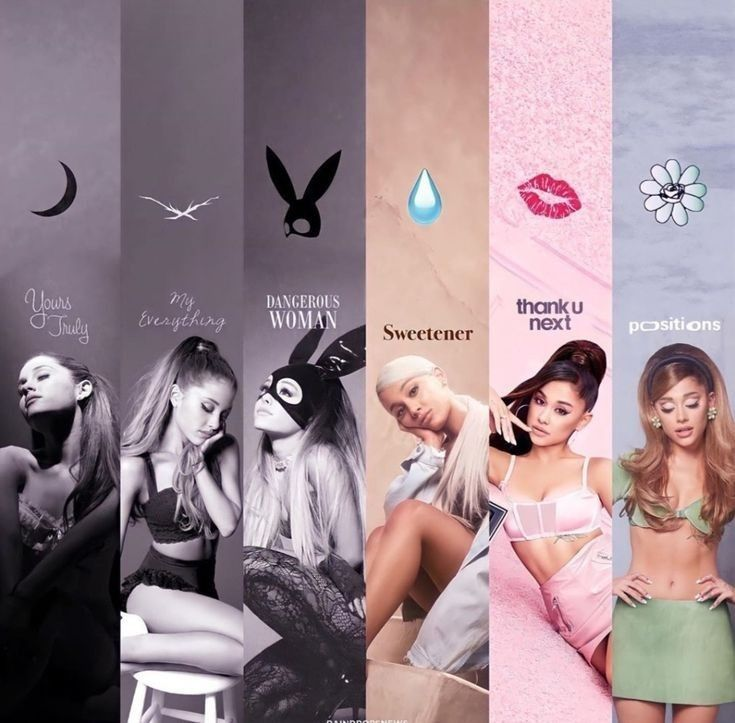

In every song, I found a piece of who I was becoming.
Favorite Albums
- Hamilton
- To love in the 21st century by Lyn Lapid
- I one by Xlov
- Love Yourself: Tear by BTS
- You never walk alone by BTS
- Map of the soul: 7 by BTS
- Wings by BTS
- Thank you, next by Ariana Grande
- Eternal sunshineby Ariana Grande
Writing What Music Gave Me
Music has never been just background noise for me. It’s been comfort, clarity, and sometimes the only thing that truly understood me. One of the first artists who deeply shaped me was BTS. Their music found me when I was struggling to love myself and felt alone. The Love Yourself: Tear and Love Yourself: Answer albums, especially during the Love Yourself era, felt like proof that I wasn’t the only one carrying those feelings. Their message of self-acceptance and growth felt like a quiet reassurance through my headphones. The songs didn’t just sound good; they WERE good. They stayed with me. They helped me grow.
Other artists have brought out different sides of me. Lynn Lapid inspires me in a way that feels calm and intentional. There’s something about her sound that makes me want to sit down and write. Her song “In My Mind,” and others like it, showed me how powerful vulnerability can be. I remember her sharing how a song she wrote with one meaning ended up being interpreted completely differently by listeners. That stayed with me. It taught me that once you release a song, it no longer belongs only to you. It belongs to the people who hear it. Artists like Ariana Grande have carried me through different seasons of mygreen- life. Her music feels like chapters, each one tied to a specific time or version of me.
But my Love for music really started at home. My dad made music when he was younger, and our house was always filled with his songs. Watching him create made it feel possible for me, too. I started writing when I was around seven. I’ve always felt more confident with lyrics than production. I can put my emotions into words clearly, for the most part, even if I’m still learning how to shape the sound around them. When I write, I try to have a clear meaning behind a song. But I don’t expect listeners to feel exactly what I felt when I write it. Instead, I want them to find their own meaning in it. To connect with it in their own way. If someone listens to my music and feels understood, inspired, or even just a little less alone, then I’ve done what music has always done for me.



Please note, every song on that playlist are songs that I have written myself ranging from 2023 - 2026 I just plugged it into the Suno app inserted a audio clip of me singing my song and had it create a cover of it - meaning the song isn't completely sung the way I intend to sing it. I have a few more songs that are not on that playlist because I chose not to insert it there. That said, a lot of my friends love the lyrics but the AI voice throws them off. That said, I hope you can still vibe to the song the best way you can despite that.